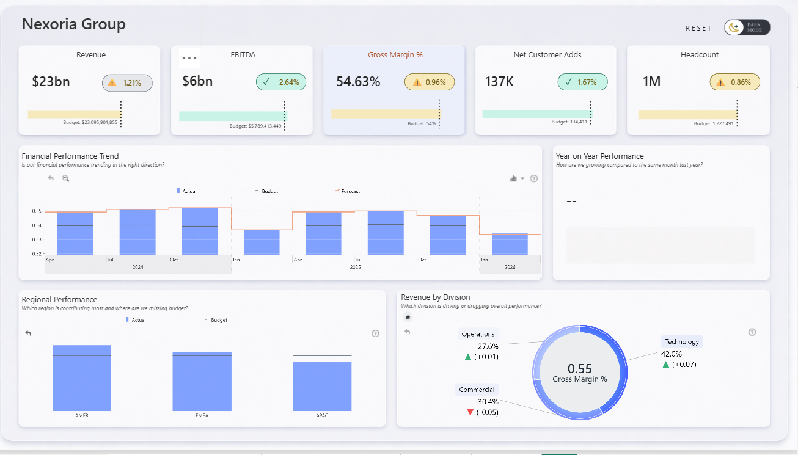

PowerBI Analytics Portfolio
A collection of Power BI dashboards and data analysis projects focused on delivering actionable business insights. GitHub links provide code and summaries, while Medium links offer full analysis and storytelling.


.png)


Power BI | DAX | Power Query
PowerBI Publication
This analyzes content publishing trends and member engagement patterns to identify what drives interaction and growth. It provides actionable insights to help optimize content strategy, boost engagement, and support data-driven decision-making.

Power BI | DAX | Power Query
Sales Pipeline Analysis
As B2B sales organizations scale globally, the volume of pipeline data grows faster than the ability to interpret it. Sales managers, account executives, and business leaders increasingly rely on interactive analytics to make confident, daily decisions, yet most organizations still struggle to answer one fundamental question: "Can we trust our forecast?"

Power BI | DAX | HTML |Power Query
Patient Diagnostic Analysis
A Power BI Patient Diagnostic Dashboard was developed to help identify high-risk patients, monitor health patterns, and support faster, data-driven clinical decisions.

Power BI | DAX | Power Query
EU Real Estate Analysis
The European real estate market represents one of the most dynamic and diverse property landscapes in the world, encompassing a wide range of property types, price points and investment opportunities across multiple countries and cities.

Power BI | DAX | Power Query
Nexoria x Executive KPI's
An executive-focused Power BI report that communicates high-level performance while allowing stakeholders to explore drivers through hierarchy-based drill-down paths.